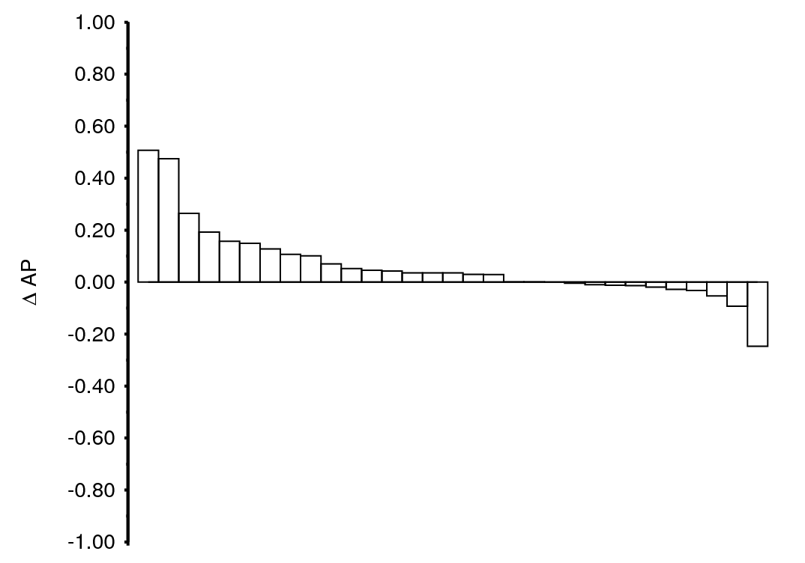
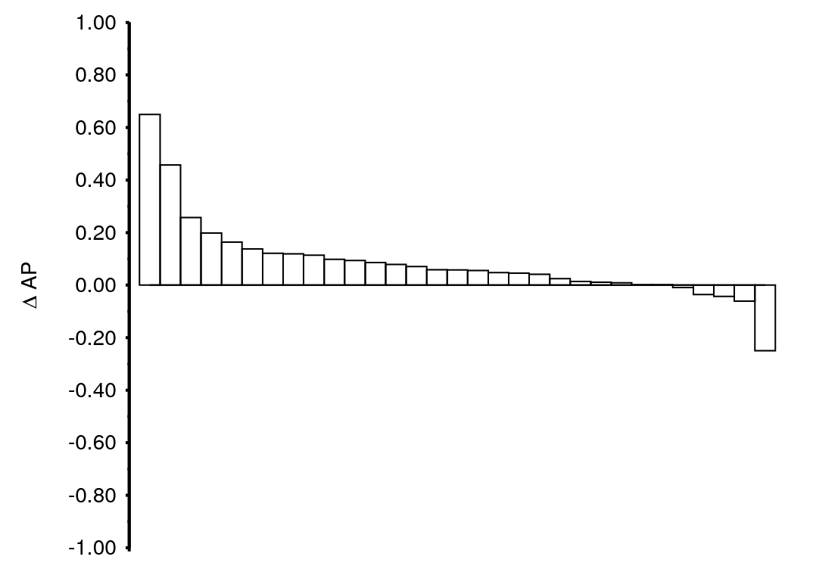
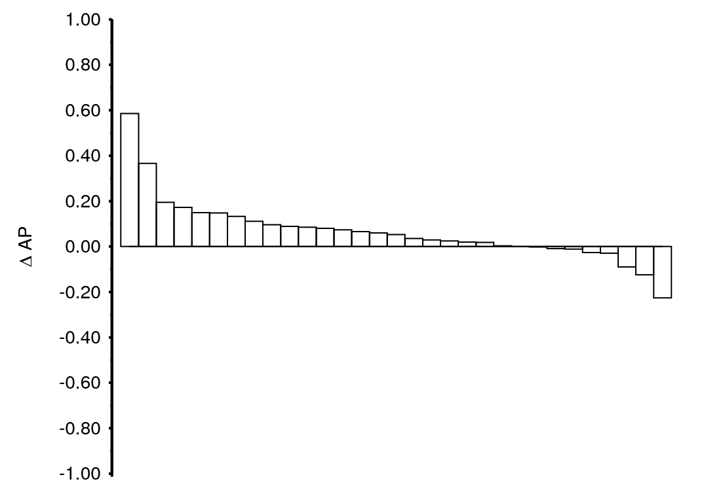
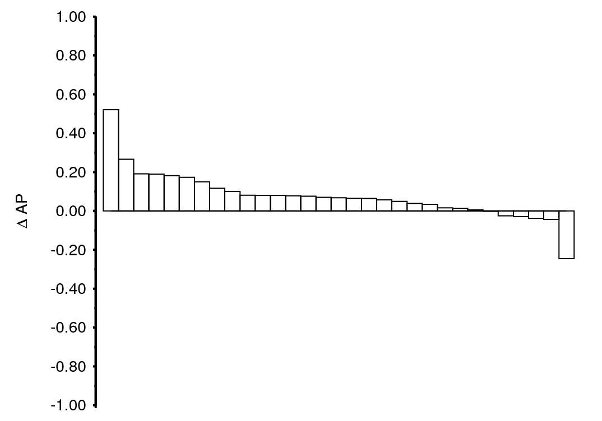
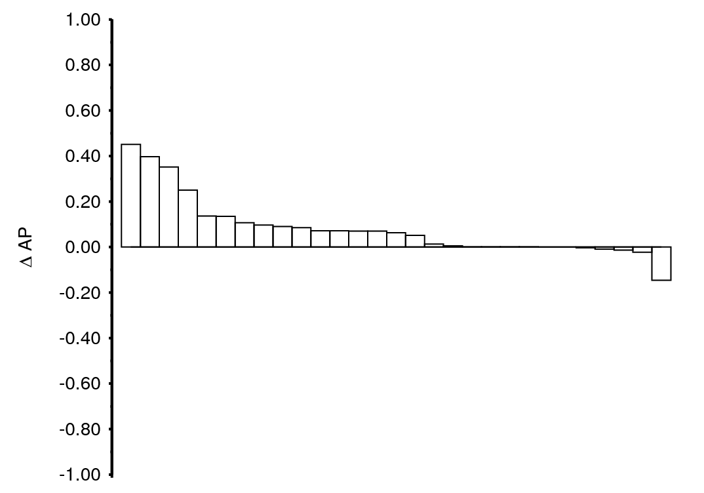
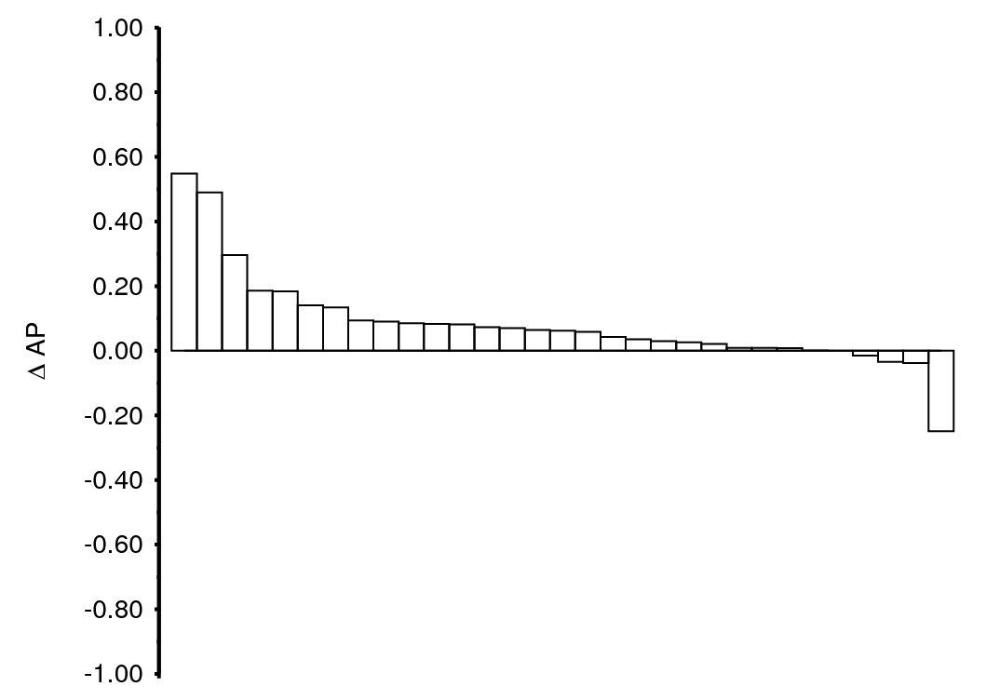
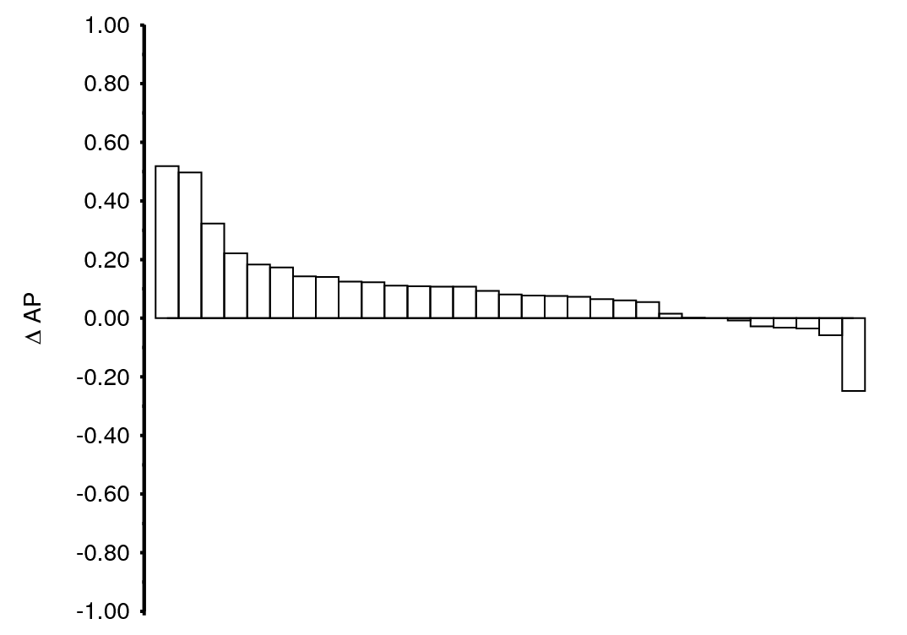
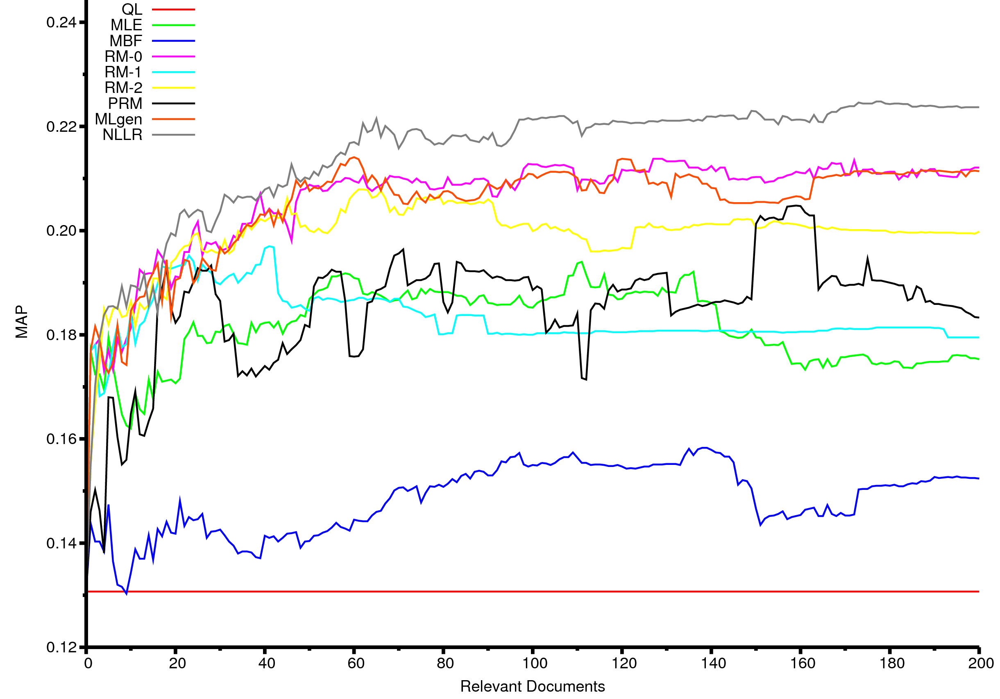
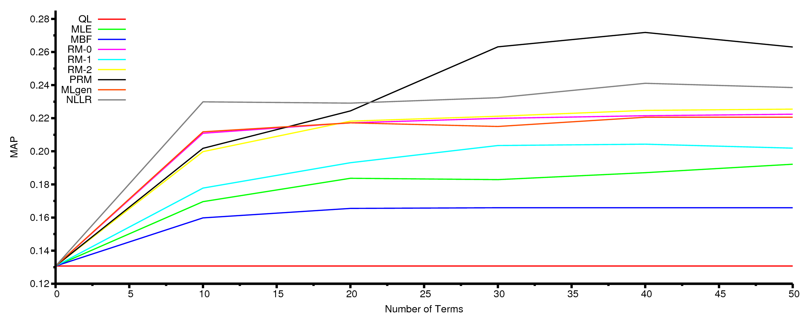
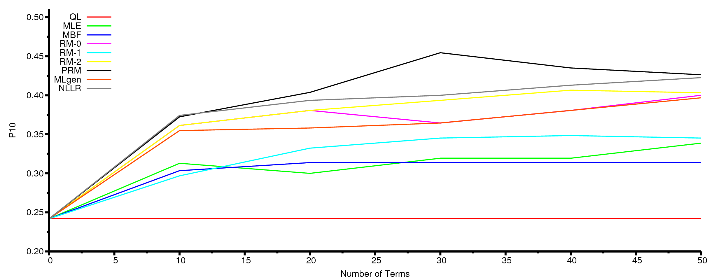

| Up | Next | Prev | PrevTail | Tail |
In this section we present the results of applying the models to explicit relevance feedback. We make use of the TREC Relevance Feedback 2008 test collection as described in Chapter 3 and we follow the same approach as in Section 4.3. In this case, however, we remove the non-relevant documents from the list of initially retrieved documents. Furthermore, we append to this list the relevant documents that were not retrieved, ordered by their QL score with respect to the query, until a maximum of 200.
Recall that for the TREC Relevance Feedback track, an additional round of relevance assessments was performed, based on the pooled submissions of the participants from which the known relevant documents were removed. We use these novel assessments for evaluation. Because of this, the results presented here are not directly comparable to the results presented in the previous section for the TREC-PRF-08 test collection.
We explore the behavior of our two novel models, MLgen and NLLR, in detail and examine the results of the other methods which focus solely on the two distinct features that our models combine: the set of relevant documents and the individual documents that it comprises. We also zoom in on each model’s performance on individual topics. Then, since these experiments require explicit relevance assessments, we take a user-oriented view and turn to the number of relevant documents. Recall from Section 3.2 that we use a large number of relevant documents available to us (around 150 documents per query on average). Clearly, such numbers are not indicative of the effort an average user is willing to spend. Therefore, we will incrementally add documents to (where ) and look at the resulting retrieval performance in order to determine how many relevant documents need to be identified to arrive at a stable retrieval performance. We conclude this section by determining the optimal number of terms to use for explicit relevance feedback.
| | P5 | RelRet | | | ||||||
| QL | 0.245 | 0.242 | 0.131 | 1030 | 1.0 | – | ||||
| MLE | 0.361* | +47.3% | 0.336* | +38.8% | 0.194* | +48.1% | 1217* | +18.2% | 0.4 | 110 |
| MBF | 0.338 | +38.0% | 0.321* | +32.6% | 0.175* | +33.6% | 1162* | +12.8% | 0.6 | 95 |
| RM-0 | 0.394* | +60.8% | 0.355* | +46.7% | 0.215* | +64.1% | 1258* | +22.1% | 0.3 | 132 |
| RM-1 | 0.348 | +42.0% | 0.352 | +45.5% | 0.198* | +51.1% | 1278* | +24.1% | 0.3 | 40 |
| RM-2 | 0.368 | +50.2% | 0.358* | +47.9% | 0.208* | +58.8% | 1342* | +30.3% | 0.4 | 66 |
| PRM | 0.414* | +69.0% | 0.372* | +53.7% | 0.212* | +61.8% | 1238* | +20.2% | 0.6 | 18 |
| MLgen | 0.374 | +52.7% | 0.342* | +41.3% | 0.214* | +63.4% | 1288* | +25.0% | 0.4 | 60 |
| NLLR | 0.432* | +76.3% | 0.374* | +54.5% | 0.230* | +75.6% | 1333* | +29.4% | 0.4 | 200 |
| | P5 | RelRet | | | ||||||
| QL | 0.245 | 0.242 | 0.131 | 1030 | 1.0 | – | ||||
| MLE | 0.342 | +39.6% | 0.355* | +46.7% | 0.185* | +41.2% | 1181 | +14.7% | 0.3 | 109 |
| MBF | 0.379* | +54.7% | 0.335* | +38.4% | 0.174* | +32.8% | 1159* | +12.5% | 0.6 | 71 |
| RM-0 | 0.374 | +52.7% | 0.390* | +61.2% | 0.191* | +45.8% | 1218* | +18.3% | 0.2 | 33 |
| RM-1 | 0.374 | +52.7% | 0.364* | +50.4% | 0.185* | +41.2% | 1216 | +18.1% | 0.1 | 23 |
| RM-2 | 0.394* | +60.8% | 0.368* | +52.1% | 0.195* | +48.9% | 1314* | +27.6% | 0.3 | 200 |
| PRM | 0.386* | +57.6% | 0.397* | +64.0% | 0.203* | +55.0% | 1195* | +16.0% | 0.6 | 200 |
| MLgen | 0.348 | +42.0% | 0.384* | +58.7% | 0.200* | +52.7% | 1265* | +22.8% | 0.3 | 38 |
| NLLR | 0.419* | +71.0% | 0.394* | +62.8% | 0.220* | +67.9% | 1358* | +31.8% | 0.5 | 200 |
First, we look at the results when using all known relevant documents (up to a maximum of 200). Tables 4.8 and 4.9 show the experimental results of applying the various approaches for estimating ; Table 4.8 shows the results when optimizing for MAP, Table 4.9 when optimzing P10. As indicated earlier, these results are obtained using the full set of judged relevant documents for estimation and subsequently removing these from the rankings.
First, we observe that the query-likelihood results are on par with the median of all submitted runs for the TREC Relevance Feedback track [48] and all models improve over this baseline. If we would have submitted the results of the NLLR model, it would have ended up in the top-3 for this particular category. The RM-2 run would have been placed at around rank 7.
Since these results are obtained using the full set of relevance assessments, one might expect that the MLE achieves high scores, because this set should be representative of the information need. Contrary to this intuition, however, the MLE approach does not achieve the highest performance when new relevant documents are to be retrieved; a finding in line with observations made by Buckley et al. [52]. MBF (which re-estimates the MLE model) mainly has a precision-enhancing effect: recall and MAP are hurt using this approach when compared against MLE.
A precision enhancing effect is also visible when using NLLR and RM. Indeed, NLLR achieves the highest scores overall, except for the number of relevant retrieved documents (RM-2 retrieves 9 relevant documents more). NLLR obtains a significant 75.6% improvement in terms of MAP over the baseline.
We further note that PRM and MBF share the same optimal setting for . The remaining models obtain optimal results using . The number of documents needed to arrive at an optimal performance varies greatly per model. In Section 4.4.3 we further discuss this particular parameter settings.
Table 4.9 shows the results when optimizing for P10. In this case, PRM slightly outperforms NLLR terms of P10. All models again significantly outperform the baseline, in terms of both P10 and MAP. In this case, however, the value of for all models except PRM and MBF is slightly lower. PRM and MBF have the same setting and merely use a different number of documents.
An interesting thing to note is that NLLR performs much better using explicit relevance feedback than when using pseudo relevance feedback. In Section 4.3 we have observed that using this model on the TREC Robust and TREC Web collections typically resulted in a performance below the baseline. On the TREC-PRF-08 test collection, however, this model slightly improved over the baseline when using the right parameter settings, cf. Figure 4.9(b). Since the TREC-RF-08 test collection uses the same document collection as TREC-PRF-08 and a subset of its topics, we conclude that NLLR is better suited towards this collection. Furthermore, we are now dealing with explicit relevance feedback and the fact that NLLR outperforms all other models may be attributed to this fact; as there are no non-relevant documents in the set of feedback documents, we hypothesize that the estimation method of NLLR performs better than in the case of pseudo relevance feedback.
| Model | Topic #708 | Topic #766 | Topic #814
| |||
| QL | 0.3333 | sourc | 0.5000 | smuggl | 0.5000 | flood |
|
| 0.3333 | decor | 0.5000 | diamond | 0.5000 | johnstown |
|
| 0.3333 | slate | ||||
| MLE | 0.2125 | slate | 0.2723 | diamond | 0.2992 | flood |
|
| 0.1333 | sourc | 0.2000 | smuggl | 0.2357 | johnstown |
|
| 0.1333 | decor | 0.0837 | drug | 0.1455 | 0 |
|
| 0.0975 | stone | 0.0700 | state | 0.0701 | dam |
| MBF | 0.3164 | slate | 0.3718 | diamond | 0.3060 | flood |
|
| 0.1448 | stone | 0.2374 | smuggl | 0.2944 | johnstown |
|
| 0.1333 | sourc | 0.0604 | launder | 0.0966 | dv |
|
| 0.1333 | decor | 0.0586 | leon | 0.0891 | dam |
| RM-0 | 0.2241 | slate | 0.3555 | diamond | 0.3498 | flood |
|
| 0.1333 | sourc | 0.2000 | smuggl | 0.2831 | johnstown |
|
| 0.1333 | decor | 0.0656 | state | 0.0801 | dam |
|
| 0.0980 | stone | 0.0571 | trade | 0.0534 | club |
| RM-1 | 0.3509 | slate | 0.3977 | diamond | 0.3146 | flood |
|
| 0.1333 | sourc | 0.2000 | smuggl | 0.2923 | johnstown |
|
| 0.1333 | decor | 0.0732 | sierra | 0.0677 | noaa |
|
| 0.0969 | roof | 0.0648 | leon | 0.0541 | histor |
| RM-2 | 0.4214 | slate | 0.4237 | diamond | 0.3405 | johnstown |
|
| 0.1333 | sourc | 0.2000 | smuggl | 0.2957 | flood |
|
| 0.1333 | decor | 0.1093 | kimberlei | 0.0490 | 1889 |
|
| 0.0502 | dmr | 0.0498 | spokesman | 0.0472 | photograph |
| PRM | 0.2749 | slate | 0.4853 | diamond | 0.3364 | johnstown |
|
| 0.1546 | stone | 0.2000 | smuggl | 0.3363 | flood |
|
| 0.1333 | sourc | 0.0646 | leon | 0.0685 | dam |
|
| 0.1333 | decor | 0.0634 | sierra | 0.0579 | conemaugh |
| MLgen | 0.2155 | slate | 0.3558 | diamond | 0.3680 | flood |
|
| 0.1333 | sourc | 0.2000 | smuggl | 0.2731 | johnstown |
|
| 0.1333 | decor | 0.0611 | state | 0.0787 | dam |
|
| 0.1008 | stone | 0.0552 | trade | 0.0613 | water |
| NLLR | 0.2439 | slate | 0.3569 | diamond | 0.3338 | flood |
|
| 0.1333 | sourc | 0.2000 | smuggl | 0.2812 | johnstown |
|
| 0.1333 | decor | 0.0685 | state | 0.0813 | dam |
|
| 0.1105 | stone | 0.0561 | trade | 0.0583 | club |
|
| ||||||
| 
(a) MLE |
|
(b) MBF |
| 
(c) RM-0 |
| 
(d) RM-1 |
| 
(e) RM-2 |
| 
(f) PRM |
| 
(g) MLgen |
| 
(h) NLLR |
Table 4.10 shows query models for three example topics. It is clear that the baseline distributes the probability mass evenly across all the terms in the topics. MLE sometimes picks op “noisy” terms (cf. topic #814), whose probability MBF properly re-estimates. MBF does pick up the term ‘dv’ for this topic, which seems to occur more frequently in the relevant documents than the collection (and which is why MBF assigns a high probability). For topic #814, RM-1 and RM-2 are the only models that do not pick up ‘dam’, which seems a reasonable term given the topic. PRM is the only model that picks up ‘Conemaugh,’ which is the name of lake the dam was holding back.
Figure 4.10 shows a per-topic breakdown of the relative performance of the various models with respect to the baseline. Topic #808 (“north korean counterfeiting”) seems a particularly difficult topic and the retrieval performance is worst on this topic for all employed query models (although there are 530 judged relevant and 330 new relevant documents available). All query models emphasize different aspects of the feedback documents, ranging from drugs to other kinds of trafficking. We further note that most models select the same terms, albeit with a different probability. RM-0 shows only minor differences with MLgen in the terms they assign the highest probability.
In general, NLLR is able to substantially improve over the baseline on a larger number of topics than the other methods. RM-2 works best for topic #766, on which NLLR also performs very well (this topic is the second from the left for NLLR). MBF and MLE improve most on topic #814. Interestingly, this topic is also helped a lot by NLLR (this topic is the first from the left for NLLR), but not by RM. These observations provide evidence that NLLR is indeed able to reap the benefits both of the individual relevant documents (like RM) and of the set as a whole (like MBF, MLE, and MLgen). Out of the various relevance modeling approaches, RM-0 performs best. This finding is in line with observations made by Lavrenko and Croft [182], who specifically design this relevance modeling variant to be used with explicit relevance feedback. In contrast, PRM (which is RM-0 applied to re-estimated document models) performs slightly worse than RM-0. Most notably, topic #766 (“diamond smuggling”) is helped to a much smaller extent using PRM. It turns out that PRM picks up terms that are highly discriminative (such as “liberia” and “angola”) but that do not contribute much towards identifying relevant documents.

| 
(a) MAP |
| 
(b) P10 |
Intuitively, using a large sample of known relevant documents to determine the parameters of means that we can be fairly certain in the predictive quality of the employed estimation method. But how many documents would we need to arrive at a stable retrieval performance? In order to answer this question, we select an increasing amount of relevant documents from the QL run, ranked by their retrieval score. For each increment we estimate new query models and use them to determine the resulting retrieval performance. Note that we still remove all the judged relevant documents, i.e., the full set , from the resulting rankings in order to make the obtained retrieval results comparable those described in Section 4.3. This experiment corresponds to a user selecting relevant documents from a result list, in order to further improve the results. By determining the relationship between retrieval performance and , we can quantify how many documents a user should judge in order to arrive at a stable retrieval performance.
Figure 4.11 shows the retrieval performance at increasing amounts of relevance information. Again, NLLR achieves the highest absolute MAP scores, whereas MBF performs the worst. We observe that all models have a very steep increase in MAP between 1 and 5 relevant documents. This means that that the biggest relative improvement is gained when a user identifies only a small number of relevant documents. Moreover, this improvement is a very conservative estimate, since the full set of initially judged relevant documents is removed and we only look at newly retrieved relevant documents. We also observe that all models respond roughly similarly to the amount of relevant documents; the more documents are used, the higher the resulting retrieval performance. MBF and PRM are sensitive to which documents are added. Both models show considerable variation in MAP at certain intervals. MLgen responds similarly to RM-0 when adding more feedback documents. RM-2 also, although its results are slightly worse. RM-1 again shows different behavior, stabilizing its performance after 90 feedback documents.
So far we created rather conservative query models which consisted of only 10 terms with the highest probability. In this section, we consider this parameter under explicit relevance feedback in more detail.
Figure 4.12 shows the effects of varying the number of terms for in terms of both MAP and P10. In terms of MAP, we observe that PRM is highly sensitive to the number of terms included in the query model. NLLR only outperforms this model on MAP using . Furthermore, we note that, in terms of MAP, all models except PRM obtain close-to-optimal performance when at least 10 terms are used. MBF performs worst of all models except for the baseline. As to P10, PRM is equal to or outperforms NLLR on any number of terms used. PRM and RM-1 only reach their optimal performance when . MBF is again at the bottom of the spectrum, although its performance is in this case closely matched by that of MLE and RM-1.
Buckley et al. [51] find that, using the vector space model in a TREC routing task, there exists a linear relationship between the log of the number of terms added to a query and the resulting retrieval effectiveness (and they find the same kind of relationship between the log of the number of documents used for relevance feedback and retrieval effectiveness). The maximum improvement they obtain ranges from 19% to 38% (the latter obtained using 5000 explicitly relevant documents and adding 4000 terms). We do not observe such relationships on ad hoc retrieval for this test collection, neither for the number of documents, nor for the number of terms. We do find consistent increases in performance using explicit relevance feedback for all models. We conclude, therefore, that acquiring explicit relevance assessments from users can substantially and significantly improve retrieval performance using any model. NLLR and PRM, however, obtain the highest retrieval scores of all models evaluated in this chapter.
| Up | Next | Prev | PrevTail | Front |